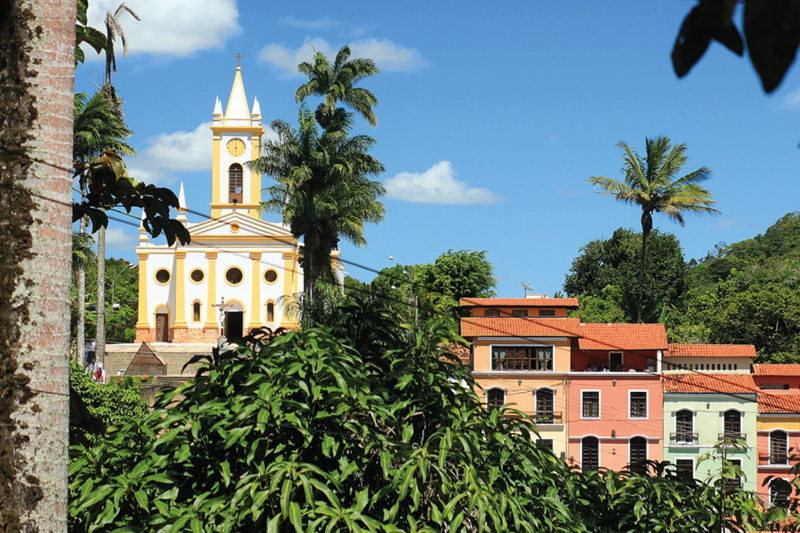
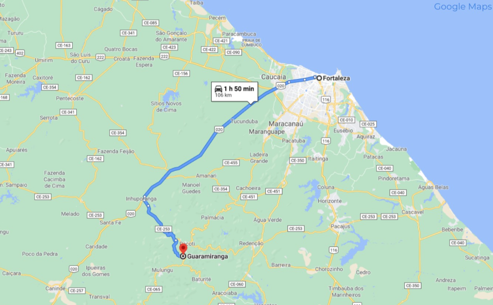

Bem-Vindo
Seja muito bem-vindo! Aqui você vai conhecer a história, a cultura, os encantos e os sabores de um destino único. Prepare-se para descobrir lugares incríveis e viver novas experiências através das nossas dicas!
Como Chegar!
A charmosa cidade de Guaramiranga, situa-se no chamado maciço de Baturité, na serra cearense! Há aproximadamente 105 km de distância da capital do estado do Ceará, Fortaleza, é uma ótima opção para fugir do agito da capital e se isolar no meio da natureza!